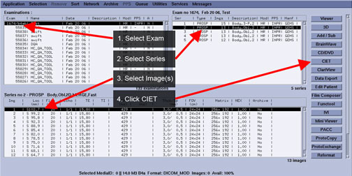
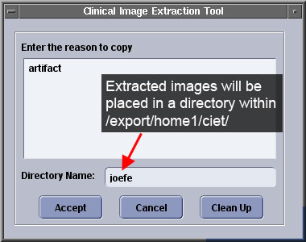

Operating Documentation
Direction 5440001-3, Rev# 6
Signa HDxt Service Methods
Module Version 1.0, Version Date 4/25/07
Operating Documentation |
| Required Persons | Preliminary Reqs | Procedure | Finalization |
|---|---|---|---|
| 1 | Not Applicable | 5 mins | Not Applicable |
This tool is available to the clinical technologist and Field Engineer for quickly extracting images from the image database into a temporary directory of the user’s choosing. This is designed primarily for InSite users so they can quickly access desired images by extracting them into a unique directory.
Select the images to extract from the Display Browser and then launch CIET.
In the Examination field, select the Exam that has the images you want to extract.
In the Exam no ... field, select the Series that has the images you want to extract.
In the Series no ... field, select the image(s) you wish to extract.
To select multiple images, hold down the CTRL key while you click other images that you want to select.
Click [CIET].
Illustration 1: Selecting Images to Extract

Type the requested information in the Clinical Image Extraction Tool window.
In the top field, type the reason for extracting the images.
In the lower field, enter the directory name these images will be stored. Any name can be used as long as it doesn't contain spaces or wild cards.
Illustration 2: CIET window

| NOTE: | The partition size of the directory is so large that it is doubtful that it will ever run out of space. Clicking [Clean Up], however, will clean up this directory. |
To locate your images, go to /export/home1/ciet/Step7Name.
| NOTE: | Extracting images saves them to the subdirectory noted above; it doesn't save them to the SaveINFO media. Saving them to the SaveINFO media must be performed separately. |
In order to save space and make finding images in the /ciet directory easier next time, click [Clean Up](see Illustration 2).
No finalization steps.